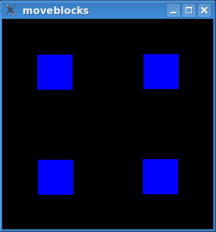
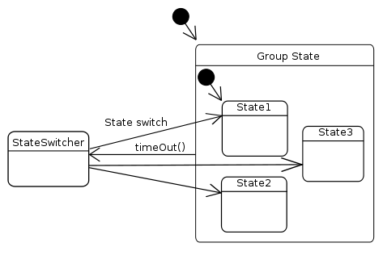

Move Blocks
The Move Blocks example shows how to animate items in a QGraphicsScene using a QStateMachine with a custom transition.

The example animates the blue blocks that you can see in the image above. The animation moves the blocks between four preset positions.
The example consists of the following classes:
StateSwitcherinherits QState and can addStateSwitchTransitions to other states. When entered, it will randomly transition to one of these states.StateSwitchTransitionis a custom transition that triggers onStateSwitchEvents.StateSwitchEventis a QEvent that triggersStateSwitchTransitions.QGraphicsRectWidgetis a QGraphicsWidget that simply paints its background in a solid blue color.
The blocks are instances of QGraphicsRectWidget and are animated in a QGraphicsScene. We do this by building a state graph, which we insert animations into. The graph is then executed in a QStateMachine. All this is done in main(). Let's look at the main() function first.
The main() Function
After QApplication has been initialized, we set up the QGraphicsScene with its QGraphicsRectWidgets.
auto button1 = new QGraphicsRectWidget;
auto button2 = new QGraphicsRectWidget;
auto button3 = new QGraphicsRectWidget;
auto button4 = new QGraphicsRectWidget;
button2->setZValue(1);
button3->setZValue(2);
button4->setZValue(3);
QGraphicsScene scene(0, 0, 300, 300);
scene.setBackgroundBrush(Qt::black);
scene.addItem(button1);
scene.addItem(button2);
scene.addItem(button3);
scene.addItem(button4);
After adding the scene to a QGraphicsView, it is time to build the state graph. Let's first look at a statechart of what we are trying to build.

Note that the group has seven sub states, but we have only included three of them in the diagram. The code that builds this graph will be examined line-by-line, and will show how the graph works. First off, we construct the group state:
QStateMachine machine;
auto group = new QState;
group->setObjectName("group");
QTimer timer;
timer.setInterval(1250);
timer.setSingleShot(true);
QObject::connect(group, &QState::entered, &timer, QOverload<>::of(&QTimer::start));
The timer is used to add a delay between each time the blocks are moved. The timer is started when group is entered. As we will see later, group has a transition back to the StateSwitcher when the timer times out. group is the initial state in the machine, so an animation will be scheduled when the example is started.
auto state1 = createGeometryState(button1, QRect(100, 0, 50, 50),
button2, QRect(150, 0, 50, 50),
button3, QRect(200, 0, 50, 50),
button4, QRect(250, 0, 50, 50),
group);
...
auto state7 = createGeometryState(button1, QRect(0, 0, 50, 50),
button2, QRect(250, 0, 50, 50),
button3, QRect(0, 250, 50, 50),
button4, QRect(250, 250, 50, 50),
group);
group->setInitialState(state1);
createGeometryState() returns a QState that will set the geometry of our items upon entry. It also assigns group as the parent of this state.
A QPropertyAnimation inserted into a transition will use the values assigned to a QState (with QState::assignProperty()), i.e., the animation will interpolate between the current values of the properties and the values in the target state. We add animated transitions to the state graph later.
QParallelAnimationGroup animationGroup;
auto anim = new QPropertyAnimation(button4, "geometry");
anim->setDuration(1000);
anim->setEasingCurve(QEasingCurve::OutElastic);
animationGroup.addAnimation(anim);
We move the items in parallel. Each item is added to animationGroup, which is the animation that is inserted into the transitions.
auto subGroup = new QSequentialAnimationGroup(&animationGroup);
subGroup->addPause(100);
anim = new QPropertyAnimation(button3, "geometry");
anim->setDuration(1000);
anim->setEasingCurve(QEasingCurve::OutElastic);
subGroup->addAnimation(anim);
The sequential animation group, subGroup, helps us insert a delay between the animation of each item.
auto stateSwitcher = new StateSwitcher(&machine);
stateSwitcher->setObjectName("stateSwitcher");
group->addTransition(&timer, &QTimer::timeout, stateSwitcher);
stateSwitcher->addState(state1, &animationGroup);
stateSwitcher->addState(state2, &animationGroup);
...
stateSwitcher->addState(state7, &animationGroup);
A StateSwitchTransition is added to the state switcher in StateSwitcher::addState(). We also add the animation in this function. Since QPropertyAnimation uses the values from the states, we can insert the same QPropertyAnimation instance in all StateSwitchTransitions.
As mentioned previously, we add a transition to the state switcher that triggers when the timer times out.
machine.addState(group);
machine.setInitialState(group);
machine.start();
Finally, we can create the state machine, add our initial state, and start execution of the state graph.
The createGeometryState() Function
In createGeometryState(), we set up the geometry for each graphics item.
static QState *createGeometryState(QObject *w1, const QRect &rect1, QObject *w2, const QRect &rect2, QObject *w3, const QRect &rect3, QObject *w4, const QRect &rect4, QState *parent) { auto result = new QState(parent); result->assignProperty(w1, "geometry", rect1); result->assignProperty(w2, "geometry", rect2); result->assignProperty(w3, "geometry", rect3); result->assignProperty(w4, "geometry", rect4); return result; }
As mentioned before, QAbstractTransition will set up an animation added with addAnimation() using property values set with assignProperty().
The StateSwitcher Class
StateSwitcher has state switch transitions to each QStates we created with createGeometryState(). Its job is to transition to one of these states at random when it is entered.
All functions in StateSwitcher are inlined. We'll step through its definition.
class StateSwitcher : public QState { Q_OBJECT public: explicit StateSwitcher(QStateMachine *machine) : QState(machine) { }
StateSwitcher is a state designed for a particular purpose and will always be a top-level state. We use m_stateCount to keep track of how many states we are managing, and m_lastIndex to remember which state was the last state to which we transitioned.
void onEntry(QEvent *) override
{
int n;
while ((n = QRandomGenerator::global()->bounded(m_stateCount) + 1) == m_lastIndex)
{ }
m_lastIndex = n;
machine()->postEvent(new StateSwitchEvent(n));
}
void onExit(QEvent *) override {}
We select the next state we are going to transition to, and post a StateSwitchEvent, which we know will trigger the StateSwitchTransition to the selected state.
void addState(QState *state, QAbstractAnimation *animation) {
auto trans = new StateSwitchTransition(++m_stateCount);
trans->setTargetState(state);
addTransition(trans);
trans->addAnimation(animation);
}
This is where the magic happens. We assign a number to each state added. This number is given to both a StateSwitchTransition and to StateSwitchEvents. As we have seen, state switch events will trigger a transition with the same number.
The StateSwitchTransition Class
StateSwitchTransition inherits QAbstractTransition and triggers on StateSwitchEvents. It contains only inline functions, so let's take a look at its eventTest() function, which is the only function that we define..
bool eventTest(QEvent *event) override
{
return (event->type() == QEvent::Type(StateSwitchEvent::StateSwitchType))
&& (static_cast<StateSwitchEvent *>(event)->rand() == m_rand);
}
eventTest is called by QStateMachine when it checks whether a transition should be triggered–a return value of true means that it will. We simply check if our assigned number is equal to the event's number (in which case we fire away).
The StateSwitchEvent Class
StateSwitchEvent inherits QEvent, and holds a number that has been assigned to a state and state switch transition by StateSwitcher. We have already seen how it is used to trigger StateSwitchTransitions in StateSwitcher.
class StateSwitchEvent: public QEvent { public: explicit StateSwitchEvent(int rand) : QEvent(StateSwitchType), m_rand(rand) { } static constexpr QEvent::Type StateSwitchType = QEvent::Type(QEvent::User + 256); int rand() const { return m_rand; } private: int m_rand; };
We only have inlined functions in this class, so a look at its definition will do.
The QGraphicsRectWidget Class
QGraphicsRectWidget inherits QGraphicsWidget and simply paints its rect() blue. We inline paintEvent(), which is the only function we define. Here is the QGraphicsRectWidget class definition:
class QGraphicsRectWidget : public QGraphicsWidget { public: void paint(QPainter *painter, const QStyleOptionGraphicsItem *, QWidget *) override { painter->fillRect(rect(), Qt::blue); } };
Moving On
The technique shown in this example works equally well for all QPropertyAnimations. As long as the value to be animated is a Qt property, you can insert an animation of it into a state graph.
QState::addAnimation() takes a QAbstractAnimation, so any type of animation can be inserted into the graph.